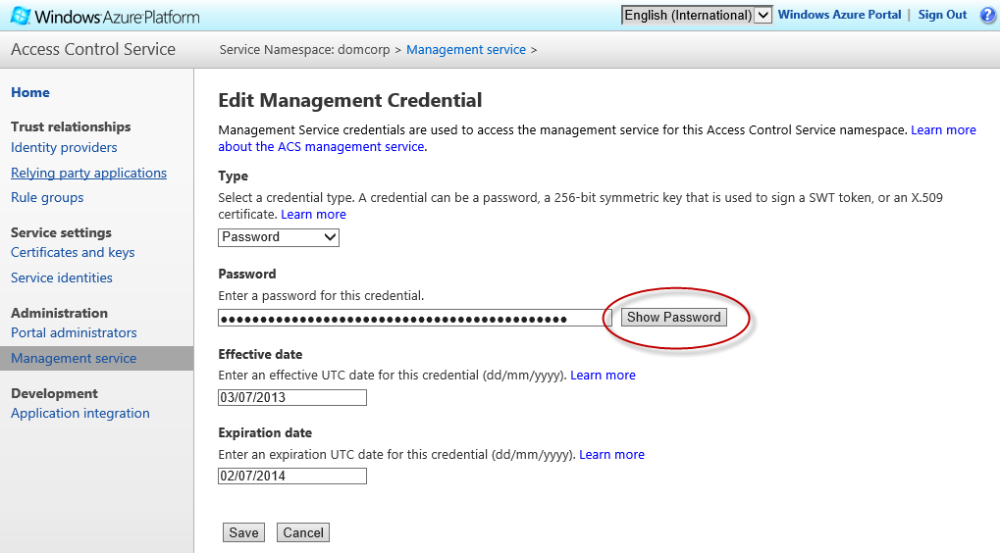

After you have created your Windows Azure Active Directory (WAAD) tenant as described on the Initial configuration tasks, and added some users and defined a Service Principal as described on the Configuring WAAD page, you can complete the setup of your Access Control Services (ACS) namespace.
In the scenario addressed by this example application, the role of ACS is to apply a set of rules to add a role claim to an authenticated user's collection of claims. To do this you must configure the following elements:
- One or more Identity Providers that can authenticate users and generate an initial set of claims. In this scenario WAAD will be the identity provider (although later you may decide to add more identity providers such as Microsoft ID or Google ID). ACS must trust any identity providers it uses.
- A collection of rules that examine the claims from the identity providers and then assign a new role claim that identifies the authenticated user as a User or Manager. The web application will use this role claim to control access to certain pages within the application.
- A Relying Party that identifies the application that will use these claims. In the scenario addressed by this application, the relying party will be the web application. The relying party must trust ACS.
In addition to your WAAD tenant name, ACS namespace name, and the credentials of your global administrator, you also need your ACS Management key to run this script. You can find this key in the Windows Azure Management Portal.
Click on the Manage link on the Access Control Namespaces page.
Then click on the ManagementClient link on the Management Service page.
Then click on the Password link.
You can then find the password to use as your ACS Management Key. 
This PowerShell script is included in the repository here.
This script:
- Discovers your WAAD tenant ID (a GUID) that it uses to download a copy of the federation metadata for your WAAD service. The federation metadata includes all of the necessary information for ACS to integrate with WAAD.
- Uses the federation metadata to configure the identity provider in ACS. (This process is more straightforward if you complete it manually in the management portal: when you create the identity provider you can simply provide the URL of the WAAD federation metadata.)
- Defines a relying party. This will be the web application.
- Creates some default rules that pass through any claims from identity provider (WAAD) to the relying party (the web application).
- Adds custom rules to add Mary Jones into the Managers role and Fred Bloggs into the Users role.
- Creates a Service Principal that represents your ACS namespace in WAAD.
# Prerequisites:
# Windows Azure Active Directory Module for Windows PowerShell cmdlets (http://aka.ms/aadposh)
# Windows Azure PowerShell (http://go.microsoft.com/?linkid=9811175)
# A local folder C:\Temp
# You should run the WAADConfig.ps1 script first
# You must provide:
# - Your WAAD tenant name
# - Your ACS namespace name
# - Your ACS management key
# To work with WAAD
Import-Module MSOnline
# To work with ACS
Import-Module WAPPSCmdlets
$WAADName = '[your WAAD tenant name]'
$ACSNamespace = '[your ACS namespace name]'
$ACSManagementkey = '[your ACS Management Key]'
# Connect to WAAD - use the credentials for the Global Administrator you created when you created your WAAD tenant
Connect-MsolService
$ACSServiceAddress = "https://$ACSNamespace.accesscontrol.windows.net/"
$WAADTenantId = (Get-MsolCompanyInformation | Select -ExpandProperty ObjectId).ToString()
$WAADFederationMetaDataAddress = "https://login.windows.net/$WAADTenantId/federationmetadata/2007-06/federationmetadata.xml"
$FedFile = 'C:\Temp\federationmetadata.xml'
$AppIdentity = 'https://localhost:44300/'
$AppAddress = 'https://www.domcorp.com:44300/'
$RelyingPartyName = 'MyWebApp'
$IdentityProviderName = 'WAAD'
$RuleGroupName = 'WAADRuleGroup'
# Configure an Identity Provider, a Relying Party, and a Rule Group in your ACS Namespace
Invoke-WebRequest -Uri $WAADFederationMetaDataAddress -OutFile $FedFile
Add-IdentityProvider -Type WsFederation -WsFederationMetadata $FedFile -AllowedRelyingParties $RelyingPartyName -LoginLinkText "WAAD Login" -ManagementKey $ACSManagementkey -Name $IdentityProviderName -Namespace $ACSNamespace
Add-RelyingParty -Name $RelyingPartyName -AllowedIdentityProviders @($IdentityProviderName) -ManagementKey $ACSManagementkey -Namespace $ACSNamespace -Realm $AppIdentity -ReturnUrl $AppAddress -TokenFormat SAML_2_0 -RuleGroupName $RuleGroupName
Add-DefaultPassthroughRules -GroupName $RuleGroupName -IdentityProviderName $IdentityProviderName -ManagementKey $ACSManagementkey -Namespace $ACSNamespace
Add-Rule -GroupName $RuleGroupName -IdentityProviderName $IdentityProviderName -Description "Assign Mary Jones to the Managers role" -InputClaimType http://schemas.xmlsoap.org/ws/2005/05/identity/claims/name -InputClaimValue "maryj@$WAADName.onmicrosoft.com" -ManagementKey $ACSManagementkey -Namespace $ACSNamespace -OutputClaimType http://schemas.microsoft.com/ws/2008/06/identity/claims/role -OutputClaimValue Managers
Add-Rule -GroupName $RuleGroupName -IdentityProviderName $IdentityProviderName -Description "Assign Fred Bloggs to the Users role" -InputClaimType http://schemas.xmlsoap.org/ws/2005/05/identity/claims/name -InputClaimValue "fredb@$WAADName.onmicrosoft.com" -ManagementKey $ACSManagementkey -Namespace $ACSNamespace -OutputClaimType http://schemas.microsoft.com/ws/2008/06/identity/claims/role -OutputClaimValue Users
# Remove ACS if you want to tidy up
# Remove-RuleGroup -Name $RuleGroupName -ManagementKey $ACSManagementkey -Namespace $ACSNamespace
# Remove-RelyingParty -Name $RelyingPartyName -ManagementKey $ACSManagementkey -Namespace $ACSNamespace
# Remove-IdentityProvider -Name $IdentityProviderName -ManagementKey $ACSManagementkey -Namespace $ACSNamespaceYou can view the results of running this script in the Windows Azure Management Portal. You will also see that Windows Live ID is already included as an identity provider.